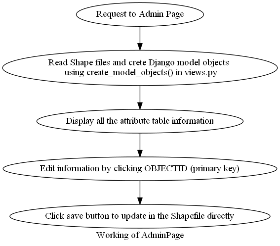

AdminPage¶

The above flowchart explains how Admin Page displays the attribute tables in an editable manner to update the records easily. Already four models representing four levels are already defined in models.py.
Creating Users¶
Users have to be created in the deployed server. Only superusers can edit the data and create other superusers. This will be useful when multiple users (volunteers) can be assigned to edit the data if this project is to be implemented on a large scale.